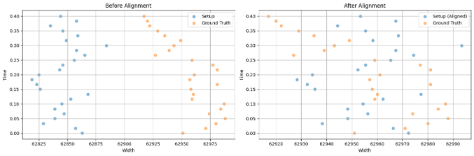

Project Motivation & Problem Statement
In many real-world environments-especially construction, mining, and excavation zones-robotic systems must operate under adverse conditions like dust, debris, and low visibility. LiDAR (Light Detection and Ranging) is a critical perception tool for 3D mapping and obstacle detection, but dust particles scatter and reflect LiDAR beams, introducing significant noise in the point cloud output. This noise can cause false positives in obstacle detection, degrade map quality, and create potential safety hazards for autonomous or semi-autonomous systems. Despite its widespread use, LiDAR's performance in dusty or particulate-heavy conditions is underexplored. This project aims to bridge that gap by simulating dusty environments, evaluating multiple LiDAR-based configurations, and analyzing the effect of airborne particulates on data fidelity.
Technical Approach

1. Environment Simulation and Setup
- Created a controlled virtual environment to inject simulated dust particles and measure their impact on LiDAR performance.
- Defined a Ground Truth Point Cloud captured in a dust-free simulation for reference.
- Tested multiple configurations: baseline, alternate mounting positions, and variations in elevation, orientation, and LiDAR models.
2. Sensor Integration using ROS 2
- Simulated robot included LiDAR sensors (multiple configurations), IMU, wheel encoders, and RGB-D camera.
- Built ROS 2 action graphs for LiDAR data capture, motion control, odometry tracking, and depth imaging.
Demonstration:
3. Data Collection and Processing
- Collected point cloud data from each setup with synchronized intervals.
- Extracted key spatial metrics (height, width, density) across datasets.
Point Cloud Analysis
A. Comparing to Ground Truth
- Compared dusty environment point clouds to clean Ground Truth using visual overlays and coordinate alignment.
- Analyzed point cloud density and resolution; normalized for mismatches.
B. Coordinate System Normalization
- Performed offset detection and correction, and aligned coordinate axes for accurate comparison.
C. Noise Localization
- Used PyTorch's
torch.cdist()to compute pairwise Euclidean distances between Ground Truth and Setup coordinates (30cm threshold for "nearby"). - Quantified points in the noisy cloud with no nearby match (likely noise) and measured coverage degradation due to dust.
Results

- Dust added significant false positives to the point cloud data, which could be misinterpreted as solid objects.
- Even small variations in sensor positioning impacted robustness to dust.
- Combining LiDAR with a depth camera improved obstacle detection confidence.
- Alignment and distance-based filtering quantified the scale and spatial distribution of noise in LiDAR data.
Limitations
- Simulation does not fully replicate realistic dust dynamics (e.g., light scattering, airflow, particulate suspension over time).
- Real-world validation is needed to confirm model fidelity.
- Dust types, densities, and lighting conditions weren't parameterized yet.
Skills and Technologies Demonstrated
- ROS 2 system architecture design
- LiDAR sensor configuration and simulation
- Point cloud data analysis and transformation
- Python scripting and PyTorch distance computation
- Robotics perception debugging under environmental noise